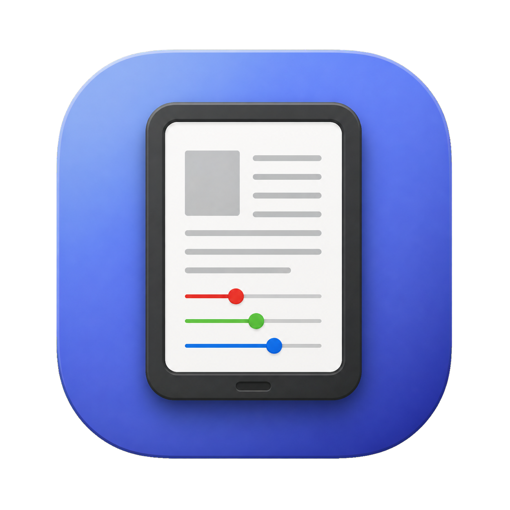
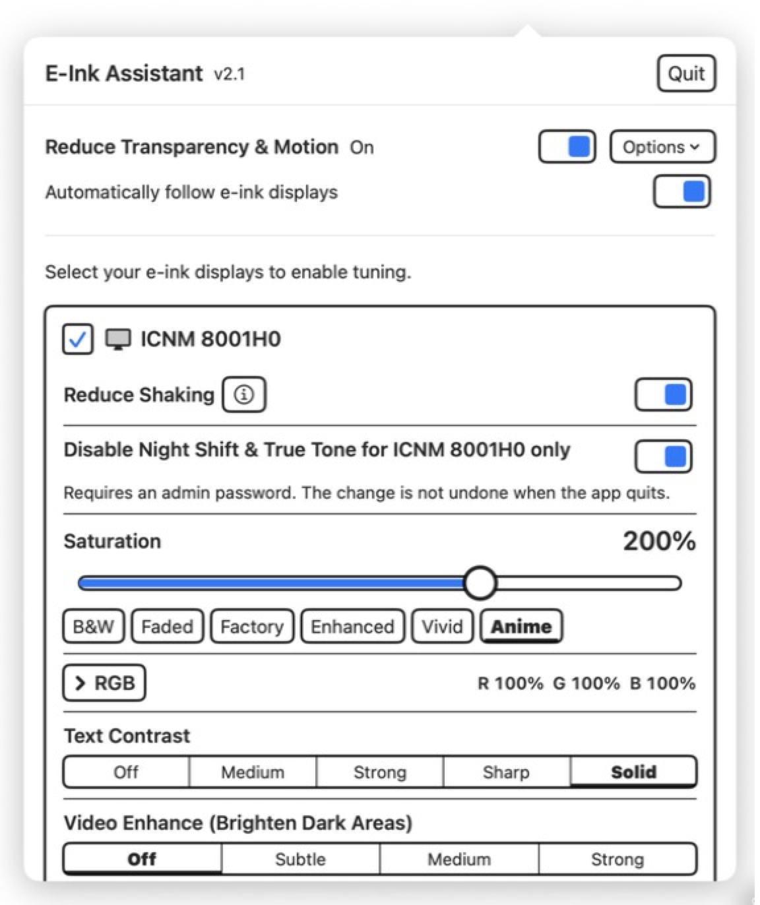
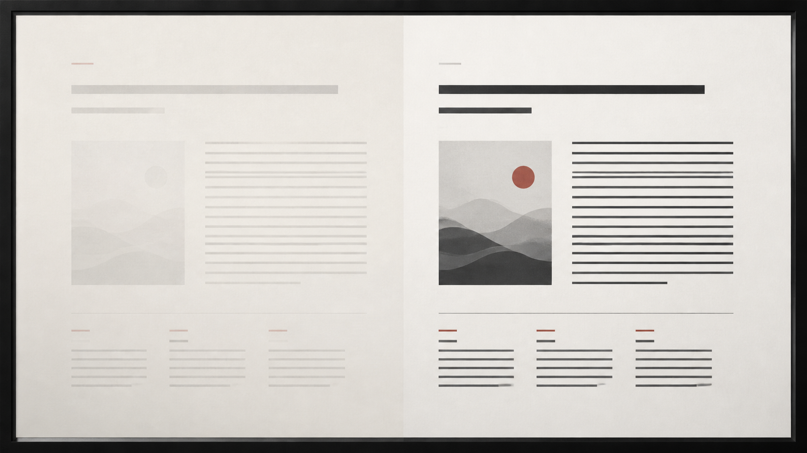
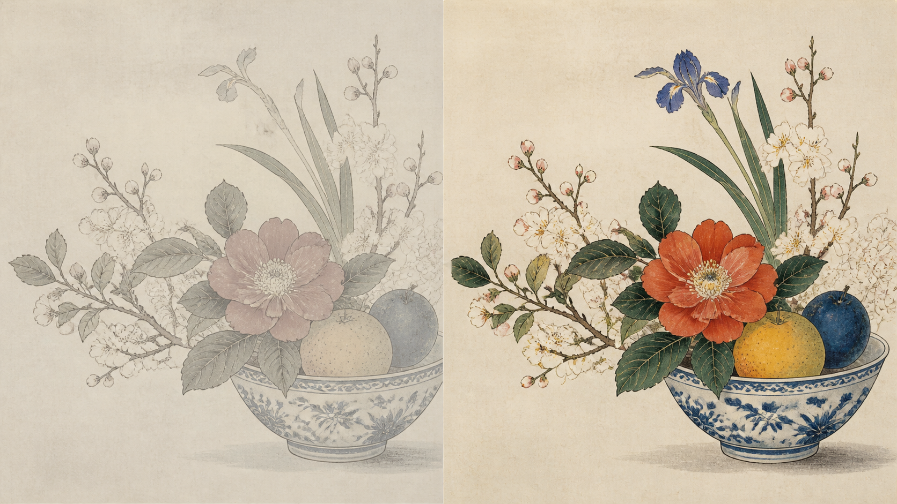
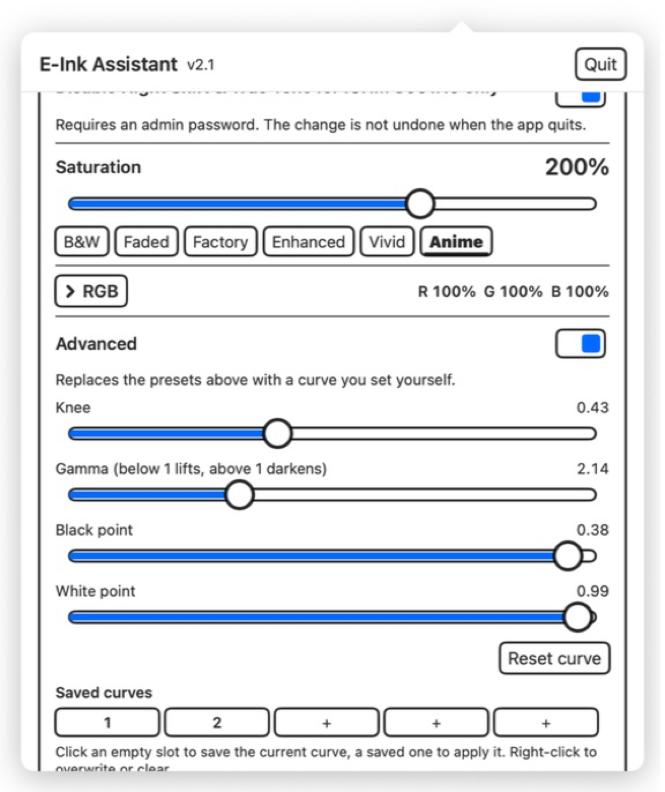

01 / ČITANJE
Potamnite blijed tekst
- Kontrast teksta nudi četiri razine za stranice niskog kontrasta.
- Koristite ga za čitanje; odvojen je od Poboljšanja videa.

E‑Ink Assistant PreuzmiPrilagodite kontrast teksta, detalje u sjenama i boje na odabranim zaslonima s e-tintom. Ostali zasloni ostaju nepromijenjeni.
macOS 14+ · Apple Silicon / Windows 7–11 · x64

01 / ČEMU SLUŽE KONTROLE
Kontrast teksta potamnjuje stranice za čitanje. Poboljšanje videa otkriva tamne detalje slike. Zasićenost i RGB pomažu zaslonima s e-tintom u boji.


Ilustrativni prikazi. Rezultati ovise o zaslonu i izvornom sadržaju.
02 / POJEDINOSTI ZNAČAJKI
01 / ČITANJE
02 / FOTOGRAFIJE + VIDEO
03 / E-TINTA U BOJI
04 / PO ZASLONU

03 / NEOBAVEZNA FINA PRILAGODBA
Mijenjajte točku pregiba, Gamma, crnu i bijelu točku uz prikaz krivulje.
Spremite do pet imenovanih predložaka. Postavke se pohranjuju zasebno za svaki zaslon.
| Značajka | macOS | Windows |
|---|---|---|
| Podržani sustavi | macOS 14 ili noviji Samo Apple silicon | Od Windows 7 SP1 do Windows 11 Računala x64 |
| Gdje aplikacija radi | Traka izbornika | Područje obavijesti |
| Odabir određenih zaslona s e-tintom | Da. Ostali zasloni ostaju nepromijenjeni. | Kao na macOS-u |
| Kontrast teksta | Četiri razine: Srednje, Jako, Oštro, Puno | Kao na macOS-u |
| Poboljšanje videa | Tri razine: Blago, Srednje, Jako | Kao na macOS-u |
| Napredna krivulja i predlošci | Uređivač krivulje uživo i pet imenovanih predložaka | Kao na macOS-u |
| Zasićenost i RGB | Profil boja po zaslonu; zasićenost 0%–300% i RGB 0%–200% | Dostupno na odgovarajućim sustavima Windows 10 2004 i Windows 11 21H2+; dostupna metoda ovisi o sustavu i hardveru |
| Smanjenje treperenja | Dostupno na podržanim vanjskim zaslonima; uključuje se kada je zaslon označen kao e-tinta | Nije dostupno. Windows nema jedinstvenu javnu kontrolu ditheringa po zaslonu, a većini sustava Windows to vjerojatno nije potrebno. |
| Smanjenje prozirnosti & kretanja | Dostupno putem pomoćnog alata koji korisnik jednokratno potvrđuje | Dostupno od Windows 7 SP1 putem kompatibilnih sistemskih API-ja |
| Svijetli način rada sustava | Ne mijenja se | Svijetli način rada sustava Windows samo tijekom sesije na Windows 10 1903+ |
| Night Shift / Noćno svjetlo | Izuzimanje pojedinačnih zaslona iz značajki Night Shift i True Tone; potrebni su odobrenje administratora i ponovno spajanje | Postavke Noćnog svjetla od Windows 10 1703+; izravna kontrola Isključi Noćno svjetlo na Windows 11 24H2+ |
| Zrcaljeni / duplicirani zasloni | Zrcaljeni fizički zasloni i dalje se mogu pojedinačno odabrati | Tonske krivulje utječu na zajednički izvor; zasićenost i RGB zahtijevaju način rada Proširi |
| Vraćanje promjena | Privremene krivulje, profili boja i dithering vraćaju se pri izlasku; izuzimanje iz značajki Night Shift / True Tone trajno je | Privremene promjene Gamma, boja, vizualnih efekata i Noćnog svjetla vraćaju se pri izlasku; boje i Noćno svjetlo oporavljaju se i nakon neuobičajenog izlaska |
| Pokretanje pri prijavi | Podržano | Podržano |
| Jezici sučelja u trenutačno dostupnim preuzimanjima | Engleski, pojednostavljeni kineski, tradicionalni kineski, japanski | Kao na macOS-u |
| Administratorski pristup | Samo za neobavezno izuzimanje iz značajki Night Shift / True Tone | Potreban instalacijskom programu i aplikaciji |
PREUZIMANJE
Obje su verzije besplatne i otvorenog koda.
macOS 14+ Apple silicon · Windows 7 SP1–11 x64